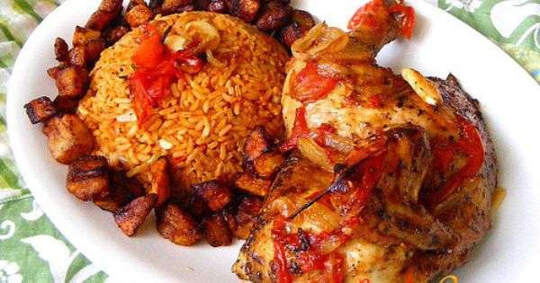
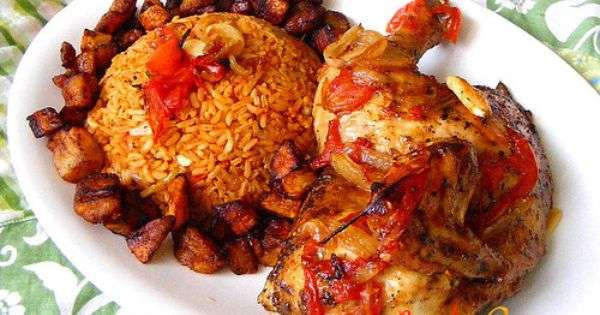
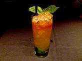

Welcome to Rehoboth Kitchen
....you should eat well
Our first day at the visiola boot camp has been very intresting, we have learnt about web design and Html. We were served lunch and we had to eat semovita with a fork which I found really awkward. i look forward to learning more and to become a professional programmer
Our first day at the visiola boot camp has been very intresting, we have learnt about web design and Html. We were served lunch and we had to eat semovita with a fork which I found really awkward. i look forward to learning more and to become a professional programmer
 



FIRST THINGS FIRST
- 
TO MY SURPRISE
Our first day at the visiola boot camp has been very intresting, we have learnt about web design and Html. We were served lunch and we had to eat semovita with a fork which i found really awkward. I look forward to learning more and to become a professional programmer. Our first day at the visiola boot camp has been very intresting, we have learnt about web design and Html. We were served lunch and we had to eat semovita with a fork which I found really awkward. I look forward to learning more and to become a professional programmer